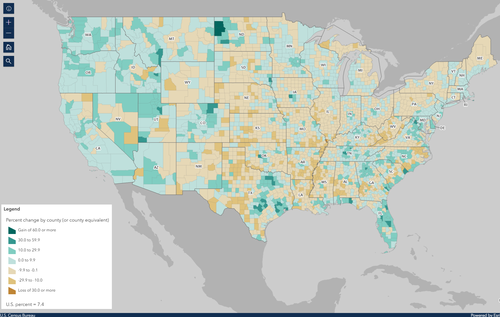
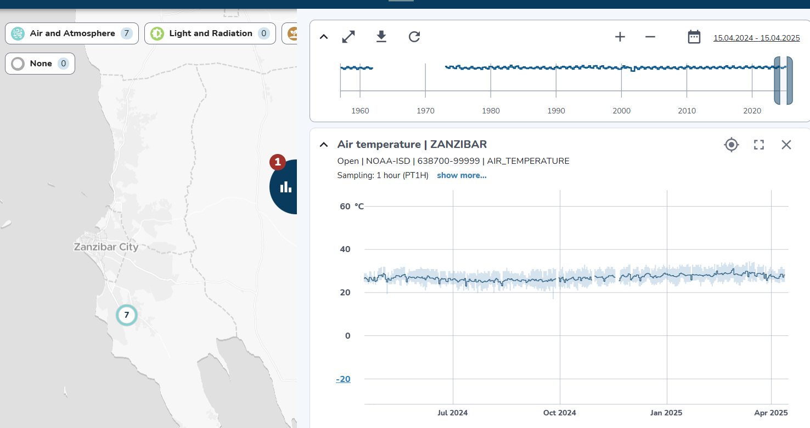

Recognize the variety of spatial data available for risk assessment and how different hazards require specific spatial, spectral, and temporal characteristics. Assess these characteristics across data types while considering additional constraints that impact data selection;
Understand what data sovereignty is and why it is important.
Note
What will you learn
In this session you will how learn to:
Search and obtain key datasets;
Evaluate the quality of a dataset with regards to its suitability for a purpose;
In geoinformatics, also called geoinformation science, we use the term spatial data to describe any type of data that can be linked to a geographic place, usually via coordinates. This means that spatial data has an unambiguous location (i.e. it can be associated to a specific location on the Planet). The classic data type is a map, a more modern one could be a satellite image (for an introduction on remote sensing see box). However, we need to consider that our work is largely done digitally on a computer, and that we might want to use data that are actually quite variable in nature. When we think about disasters or risk, we may want to include:
Tabular data or statistics (e.g. on the number of hazard or disaster events of a certain type and in a given time period);
Thematic data (e.g. a road or river network, soil types, or digital elevation models [DEMs]);
Topographic maps;
Model results (e.g. for flood hazard or slope instability);
Images (e.g. aerial photos or satellite images).
Point cloud data (LIDAR and laser scans)
In the next section we will take a closer look into different types of data.
First, it is important to distinguish between data type and data format. The first usually refers to the nature of the data, that is what type of information is the data documenting, while the latter describes what type of computer file are you talking about, including technical specifications.
Regardless of the type and format, data acquisition is done through the use sensors, surveys and other methods, after which data processing follows in order to distil useful information. We will not do an exhaustive list of data acquisition and processing methods, still, Fig. 1 provides an overview of the most relevant data types for Disaster Risk Management.
For example, you might find statistics presented in a table with either coordinates or grouped per administrative area, or illustrated as a chart or graphic. It can also happen that field photographs are available. Associating those with the other data, and integrating the information you think is useful in those photos with the rest of the analysis, can be challenging. Also consider that many maps or aerial photographs are available only as paper hardcopies. To use them in our work we first have to convert them to a digital format. This can be done by digitizing relevant information, or by scanning and subsequently georeferencing the maps or images.
Some of the data types mentioned in the diagram of Fig. 1 deserve a closer look due to their importance for Disaster Risk Management. Among all the data types, those acquired through remote sensing deserve especial attention - if you want to dive a bit more into what exactly it is remote sensing, we invite you to expand the What is remote sensing dropdown.
Digital Elevation Models (DEM) consist of a single band image where the pixel value represents the elevation of that location Fig. 2. They are a fundamental and indispensable dataset for many applications because there are many other informations that can be derived from it, especially when it comes to hydrology. In fact, delineation of catchment areas, streams, flood simulations cannot be done without a DEM as input.
Fig. 2 DEM of the Savalan Peak (Iran) based on SRTM data#
DEM are also essential for all sort of landscape analysis for their unique ability to provide an intuitive reading on the main features of an area: where are the mountains, the valleys, the flat areas and so on Fig. 3:
Fig. 3 3D visualization of the DEM of the Savalan Peak (Iran) based on SRTM data#
Land Cover maps are a form of thematic data where the map is made of mutually exclusive categories that are defined according to the prevalent land cover.
For example, a land cover map with four categories could include water, green area, dry area, and urbanized. Land cover maps are often confused with land use maps, and the two terms are mistakenly used interchangeably. Land cover refers to the actual physical surface of an area—what dominates the landscape :numref:land_cover_enschede.
In contrast, land use maps document how people utilize the land. For instance, green area describes the land cover, but park is a land use category, not a cover type.
Fig. 4 Land cover map of Enschede (The Netherlands) based on Sentinel 2 imagery (2016)#
Land cover maps are typically produced by classifying multi-spectral satellite imagery using a range of machine learning and supervised classification techniques. These methods aim to cluster pixels based on radiometric similarity. The accuracy of the classification is then assessed by evaluating whether the assigned categories correctly match the actual land cover.
The more localized a land cover map is, the more accurate and representative the land cover classes tend to be. However, there exists land cover maps at global scale that might be useful even when used for large scale mapping. See for example Worldwide land cover mapping
Land Cover Indices are derived from remotely sensed data, primarily multi-spectral satellite imagery, and are expressed on a numerical scale, typically ranging from -1 to 1. Higher values indicate a greater likelihood that the physical characteristic measured by the index is present. These indices are widely used in environmental monitoring, agriculture, urban planning and may also be very useful for disaster risk managing. Indices allow us to analyze vegetation, water bodies, soil, and built-up areas.
A few of these indices are very commonly used:
Normalized Difference Vegetation Index (NDVI) – Measures vegetation health and density. Defined as:
\[NDVI = \frac{(NIR - RED)}{(NIR + RED)}\]
Normalized Difference Water Index (NDWI) – Indicates the presence of water on the surface (water bodies).
\[NDWI = \frac{(GREEN - NIR)}{(GREEN + NIR)}\]
Representing physical characteristics as an indice is a very useful indicator that also allows for a fast and intuitive assessment of complex phenomenon Fig. 5. There are many indices built on top of remote sensed imagery, you can check this page for a list of indices
Fig. 5 NDVI (A) and NDWI (B) indeces for the Sistan Basin, in Iran, as of January 2005.#
Despite the increasing availability and quality of satellite imagery, mounting a photographic camera on an aerial vehicle is widely used and covers use cases for which satellite imagery is not the best option. In simple terms, if small object recognition is a requirement, then we need imagey that is suitable for small scale mapping.
The biggest difference between satellite and aerial and drone imagery is the spatial resolution that is higher in the latter Fig. 6. Commercial satellites offer spacial resolutions, for True colour of up to 3m while with aerial and drone photography we can have imagery with centimetric spatial resolution.
Fig. 6 Imagery documenting Caldas da Rainha, Portugal: (A) Sentinel-2 satellite imagery with a spatial resolution of 10m; (B) a highlighted section of the city captured in aerial photography with a resolution of 10cm; (C) the same highlighted section using drone imagery at 2cm resolution. Notice how the detail increases.#
Aerial photography is usually comissioned by national agencies to obtain a detailed based map for the whole country or a particular region, while drone imagery, due to the logistic challenge of scaling it up to large areas, is usually applied to cover localized areas like a development plan or a particular part of a city.
Radar data is obtained from active remote sensing satellites that emit energy waves in the microwave region of the electromagnetic spectrum toward the Earth’s surface. These waves then bounce back after interacting with the surface. By analyzing the time delay and characteristics of the returning signal, it is possible to distinguish surface features and objects once the data is processed into an image.
The main advantage of radar data—such as that provided by Synthetic Aperture Radar (SAR) sensors onboard the Sentinel-1 satellites—is that meteorological conditions like cloud cover do not affect data quality. This is in contrast to optical sensors, which depend on clear skies to capture usable imagery. Therefore, radar is an extremely valuable tool for near real-time monitoring of hazards commonly associated with cloud coverage, such as floods Fig. 7.
Fig. 7 Example of radar imagery showing water (depicted by dark pixels). The image compares the same region in April 2016 (pre-flood event) to the peak of the flood in August 2016. Cloud coverage did not impede the acquisition of useful imagery.#
LiDAR or Light Detection and Ranging is also an active remote sensing system that can be used to generate very high resolution (in other words, detailed) Digital Elevation and Digital Surface Models Fig. 9
Difference between DEM and DSM
Although DEM (Digital Elevation Models) and DSM (Digital Surface Models) are often mentioned interchangeably, they have slightly different meaning:
DEM Is a representation of the topography without any other features like constructions or trees. It represents the height of ‘bare earth’ only Fig. 8.
DSM In turn, is a representation of the topography that includes features that are on the ‘bare soil’ like houses and vegetation Fig. 8.
Fig. 8 Same area as a DEM (A) and DSM (B). Note how the DSM is representing the top of the trees and that reflects in the elevation values#
Fig. 9 DSM of the Neštich hillfort above Svätý Jur (Slovenia) made from LiDAR data (2016)#
LiDAR data acquisition is performed using a laser beam, typically mounted on an aircraft. The laser “fires” pulses toward the Earth’s surface, with point densities typically ranging from 1 to 100 points per square meter. Higher point densities provide more detailed data but also require more intensive processing.
The collected data forms a point cloud consisting of millions of points, each represented by XYZ coordinates. These coordinates are determined by measuring the time it takes for the laser beam to reach an object and reflect back to the sensor.
One particularly interesting application of high-density point clouds is their ability to penetrate vegetation and capture multiple layers of information. This allows for the identification of different levels, such as bare soil, intermediate vegetation, and the top of the tree canopy Fig. 10.
Fig. 10 Animation illustrating the level of detail collected with a LiDAR sensor mounted on an airplane#
Topographic maps are the result of surveys using traditional optical survey methods like total stations and theodolites, but nowadays, these surveys are typically assisted by GPS measurements and can be complemented with other aerial imagery or even LiDAR and other sensors.
Topographic maps include two big groups of information: man-made structures like roads and buildings and natural features with a great emphasis on altitude measurements that are on the base of terain representations and the deliniation of landscape features like ridges, valleys and water bodies Fig. 11
Fig. 11 Detail of a topographic map the Tehachapi Mountains (California, USA). Section of “The National Map” by USGS#
Modern topographic maps are actually a composition of several distinct datasets that were acquired using a myriad of different techniques, however in many countries old paper based topographic maps continue to be a precious source of information.
When a map is made of a a subset of of topographic elements in order to document a specific theme, we call it a ‘thematic map’. Common thematic maps include natural features like geology Fig. 12 or man-made elements like communications and cadastral maps (or other delimitations) Fig. 13.
Fig. 12 Thematic map of the geology from the peninsula of Peniche (Portugal)#
Fig. 13 Thematic map of the land parcels and roads from Dorset (Tasmania)#
Volunteered geographic information (VGI) is a term used to denote spatial data is produced by volunteers with the explicit purpose of contributing to larger mapping project. The information produced this way is usually used as an addition or improvement to a reference map or as an element depicting a particular event for which the volunteers were mobilized such as campaings to map affected areas after an hazard.
The most well-known example is Open Street Map (OSM)Fig. 14, a project initiated in 2006 with the explicit objective of building a map of the entire world under a permissive use license. Nowadays, OSM does not rely solely on data produced by volunteers, but the OSM mapping community continues to play a crucial role—especially in data-poor contexts.
Another interesting source of data is that produced in the context of social media applications. Most social networks provide an Application Programming Interface (API), which is essentially a collection of methods that allow for exploring and retrieving (anonymized) data published on a social networking platform.
These services are usually behind a paid subscription or offer very limited functionality in their free versions, but they can be a valuable source of data for investigating people’s behavior before, during, and after a disaster.
For example, researchers have used Twitter data to understand the extent to which citizens of Jakarta, Indonesia, utilize government-designated shelter facilities during a flood, as opposed to seeking shelter with family, friends, or other (perceived) safe locations Fig. 15.
Fig. 15 Type of shelters sought by citizens during the 2014 flood in Jakarta (excerpt) based on Twitter data. Adapted from da Silva Mano (2018) [1].#
Census data is information about a population. Based on it, a series of statistical indicators can be established to construct a socio-economic profile of the population of a country, a region, or a city. Historically, population censuses aimed to count the number of inhabitants to allow more efficient tax collection and military drafting.
Nowadays, population censuses are much more than that and are an essential source of information for planning prevention and mitigation policies Fig. 16.

Fig. 16 Map showing population change from 2010 to 2020, based on data from the 2010 and 2020 censuses. Accurate population counts are essential to reliably measure these changes.#
Population data is typically collected by national agencies with a specific mandate, often starting at the household level and then aggregated into larger units such as neighborhoods, districts, or regions. However, due to a range of complex challenges—such as limited resources, logistical constraints, or political instability—not all countries are able to conduct systematic population surveys at the household level. In such cases, estimates based on larger aggregation units serve as the best available proxy for understanding population distribution.
A good example of this approach is the WorldPop project. WorldPop provides gridded population datasets derived from a combination of census data, satellite imagery, and statistical modeling, offering valuable insights for countries where detailed household-level data is unavailable Fig. 17.
Fig. 17 A visualization of WorldPop population estimates (100x100m grid cells) for Iku Island, Lake Kivu (Democratic Republic of the Congo), as of 2020.#
In an increasingly connected world, the ability to collect and relay data in near real-time is becoming ever more feasible. This is achieved through a vast array of sensors that transmit readings via networks—most commonly over the internet using the HTTPS protocol. These sensors come in many forms and can be used to monitor human activities, such as traffic volumes, or more frequently, environmental indicators like temperature, air quality, wind speed, and more Fig. 18.

Fig. 18 Example of air temperature data collected by a sensor installed in Zanzibar, Tanzania. The data is visualized using the OpenSensorWeb portal.#
The data collected by sensors can be used to feed data portals, such as the one shown in Fig. 18, but it can also be distributed in raw format—either via APIs or through direct downloads in tabular formats Fig. 19.
Fig. 19 The the data behind the visualization in Fig. 18 but as a table, suitable for using with third party applications.#
Most of the data types described in the previous section are made available through data portals. These portals may operate at regional, national, continental, or global scales, depending on the mandate and policies of the responsible institutions.
In the table below, we provide a reference list of data portals with global or continental scope. While the list is not exhaustive, it includes essential resources—platforms that are also highly valuable for work at national or local levels.
A catalog of (mostly statistical) health-related data
Large data portals, such as those operated by NASA or the United States Geological Survey (USGS), provide access to a wide range of satellite imagery, including global Digital Elevation Models (DEMs) like SRTM and ASTER.
To make the most of these resources, it is important to understand the key characteristics of the sensors used to acquire the data, enabling more informed decision-making. Catalogs of sensor specifications, such as the one provided by ITC, can also serve as a valuable reference.
The importance of global and regional datasets is particularly pronounced in low- and middle-income countries or fragile states, where national data systems often face challenges such as limited coverage, outdated information, or concerns about reliability and consistency. In these contexts, regional and global data sources can serve as valuable supplements (or even proxies) that can help to fill critical information gaps and enhance data accuracy.
Data sharing and dissemination with OGC webservices#
Data sharing and dissemination involve the process of publishing and distributing data. This can be achieved through direct downloads, as is the case with some of the global data providers mentioned earlier, or by enabling web services that seamlessly publish data using open standards.
For spatial data, the most common (geo) web services are those defined by the Open Geospatial Consortium (OGC). Among the many standards maintained by OGC, the most widely used are the Web Map Service (WMS) and the Web Feature Service (WFS). The WMS is designed to publish spatial data as static images, while the WFS provides access to spatial data as features—geometric objects such as roads, buildings, or administrative boundaries, along with their associated attributes.
The WFS specification is better suited for integration within external data analysis workflows, as it allows direct interaction with the data. In contrast, the WMS focuses solely on data visualization, making it ideal for creating maps but less practical for detailed analytical purposes.
However the critical characteristic of OGC webservices is that they allow data interoperability. Once a dataset is published using one the OGC specifications, it can be consumed by any client application (desktop GIS, either proprietary or open source, web applications, mobile applications, etc).
Data sovereignty is an increasingly important concept in the digital age, especially as a critical element of national and organizational security. In simple terms, data sovereignty refers to the extent to which data is subject to the laws, regulations, and governance of a particular country or jurisdiction.
Closely linked to data sovereignty is the issue of licensing. Understanding the license attached to a dataset is essential for determining how the data can be used. In some cases, the licensing terms may not align with national laws or may impose restrictions that limit the intended use of the data. This can trigger the need for a contingency plan to ensure operational continuity.
Licensing models can generally be grouped into two broad categories:
Open licenses, such as Creative Commons, which encourage sharing, reuse, and redistribution.
Proprietary licenses, which often restrict the use, redistribution, or modification of data—especially for commercial or external applications.
A less obvious but significant form of data sovereignty risk stems from the use of proprietary software. Many proprietary systems rely on data formats that are not interoperable. As a result, accessing or fully using the data may require a valid license for the specific software that supports those formats. This dependency can limit flexibility and increase costs in the long run.
Incorporating Data Sovereignty into preparedeness planning#
Evaluating licensing and sovereignty-related constraints should be a standard part of any data management and risk planning strategy. Ensuring that critical data is accessible, legally usable, and interoperable is key to strengthening resilience and preparedness in disaster risk management.


Social media and media repositories APIs#
Another interesting source of data is that produced in the context of social media applications. Most social networks provide an Application Programming Interface (API), which is essentially a collection of methods that allow for exploring and retrieving (anonymized) data published on a social networking platform. These services are usually behind a paid subscription or offer very limited functionality in their free versions, but they can be a valuable source of data for investigating people’s behavior before, during, and after a disaster. For example, researchers have used Twitter data to understand the extent to which citizens of Jakarta, Indonesia, utilize government-designated shelter facilities during a flood, as opposed to seeking shelter with family, friends, or other (perceived) safe locations Fig. 15.
Fig. 15 Type of shelters sought by citizens during the 2014 flood in Jakarta (excerpt) based on Twitter data. Adapted from da Silva Mano (2018) [1].#